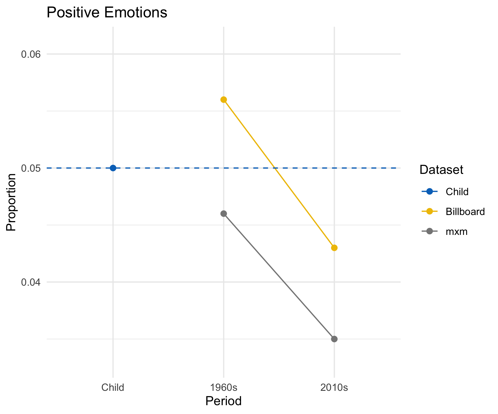
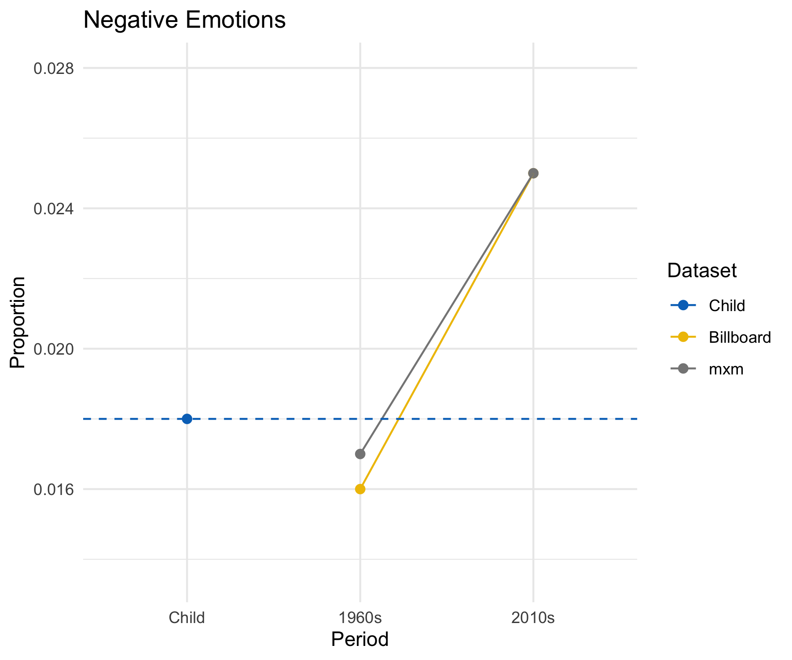

I have recently published, together with Lotty Brand and Alex Mesoudi, a paper studying the expression of emotions in the lyrics of the last 50 years of English-language pop songs - open access here. We try to explain two related empirical findings: the frequency of words with positive emotional content decreases and, on the contrary, the frequency of words with negative emotional content increases in song lyrics. (Both by roughly one third. If, for example, the average song in 1960s had 30 words associated with negative emotion, the average song in 2010s has 40, assuming that they have the same total number of words.) This is a specific aspect of a relatively well-known phenomenon, that has been measured in various ways: pop songs have become sadder in the last decades.
What we added in the paper is an attempt of explaining why this happened. We looked for cultural influences, such as upcoming artists copying the emotional tone from successful, or prestigious, artists of the previous years, but we did not find they were able to explain the pattern. We found, instead, that a general preference for songs with more negative lyrics, coupled with “unbiased transmission”, i.e. upcoming artists copying at random from the artists of the previous years, could explain it. Of course, upcoming artists do not “copy at random”: unbiased transmission stands for many unknown processes that cumulatively appear similar to genetic drift, where songs tend to “inherit” from one year to the other some of their features. The effect of unbiased transmission is important in our statistical model, but unbiased transmission is non-directional, so that a preference for negative lyrics, even if weak, can drive the process. We also wrote a popular piece about it in aeon, where we explain more in detail all that.
An interesting question for me is then why, if there is a general preference for negative lyrics, we observe a trend toward sadder songs or, in other words, why songs in the 1960s, at the beginning of our datasets, were happier? There are many possible answers here: one, that I thought possible, was that in the middle of last century songs were artificially, so to say, happier, possibly because of more control from centralised broadcasting networks, producers, and similar. It could have been possible that, if few people in the key positions wanted to push happier songs, they could succeed. Or at least, their work would have been easier than now, when we have access to more options, from private radio to recorded tape cassettes to, obviously, Spotify and co. In sum, access to more options allows people to listen to the music they really want to.
How to test this idea? An immediate prediction is that older songs should be sadder than middle-of-last-century songs. After some searches, and a chat with Pat Savage, I found the Child Ballads, a collection of 305 traditional ballads, put together in the 19th century. The datation of the ballads is problematic (even though most of them are probably from the 19th century), but the collection fits well in a not-very rigorous, but useful, category of “older” songs. I extracted the texts from here and performed the same sentiment analysis I have made for the recent pop songs. An obvious problem is that the sentiment analysis (LIWC, dictionary-based) uses a contemporary lexicon, which may not be suitable for the analysis of old lyrics. A shortcut I used for this (very) exploratory analysis is to also check how many of the words in each songs were recognised by a contemporary English dictionary and to use this figure to calculate the proportion of positive- and negative-emotion words. All the code is available in a GitHub repository.
It looks my hypothesis was wrong. The proportion of words associated to emotions, both positive and negative, is more similar to the 1960s figure than to the contemporary one. In sum, old ballads are happier than contemporary pop songs, and in line with pop songs of fifty years ago. (In the plot below, “Billboard” and “mxm” are the two datasets we used to assess the sentiment of the last fifty years songs. More information in the paper or in the aeon piece.)


Of course, this is a very basic, and hardly rigorous, analysis. In my intuition old ballads are not exactly cheerful and breezy. Still, apparently, they are, at least when compared to contemporary pop lyrics. What to do with these results, I do not know. Are there more rigorous assessments of sentiment for old song lyrics around? Are Child ballads representative? Other ideas that can explain the contemporary trends? Feedback and advice are welcome as usual!